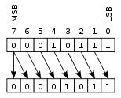

Help Index
RiSC16 Instruction Set Simulator
├ Enhanced Architectures
└ Interface Description
This simulator is a tool that emphasizes the limits of the very reduced RiSC16 instructions set. It allows to define others architectures that have news instructions and a different number of registers.
There are four preset architectures. The first is the original RiSC16 and has got the 8 instructions already presented. The instructions set of the architecture “Special IS[1]” is made up of the 8 original instructions, plus 8 new instructions. It is presented in the next table.
An additional bit for the opcode is required to code the 16 instructions. So, the instruction size grows from 16 to 17 bits. The architecture “Special IS[1] – 16 reg – Instruction 24 bits” has got the same instruction set but it has a bank of 16 registers and the instruction size is increased to 24 bits. It allows lager immediate value as it shows in the next table.

These news instructions are presented below.
SUB: R[regA] ← R[regB] – R[regC]
The contents of the regB and the regC are subtracted. The result is stored in regA.
NOR: R[regA] ← NOT(R[regB] | R[regC])
The result of the NOR operation between regB and regC is stored in regA.
XOR: R[regA] ←(R[regB] ^ R[regC])
The result of the XOR (exclusive OR) operation between regB and regC is stored in regA.
The next three instructions aren’t included in the architecture “Special IS[1]” but can be added in a new architecture as it will be describe later.
OR: R[regA] ← (R[regB] | R[regC])
The result of the OR operation between regB and regC is stored in regA.
XNOR: R[regA] ←NOT(R[regB] ^ R[regC])
The result of the XNOR operation between regB and regC is stored in regA.
AND: R[regA] ← (R[regB] & R[regC])
The result of the AND operation between regB and regC is stored in regA.
BL (Branch if Lower): if(R[regA]< R[regB]) {PC ← PCBL+1+immed} else PC←PCBL+1}
The instruction compares the contents of the regA and the regB. If the content of regA is lower to regB, the PC will be loaded with PCBL+1+imm(extend), else, it will be loaded with PCBL+1.
BG (Branch if Greater): if(R[regA]> R[regB]) {PC ← PCBG+1+immed} else PC←PCBG+1}
The instruction compares the contents of the regA and the regB. If the content of regA is greater to regB, the PC will be loaded with PCBG+1+imm(extend), else, it will be loaded with PCBG+1.
The shift operations allow to multiply (right shift) or to divide (left shift) a number by a power of two. These require the implementation of a barrel shifter in the ALU.
SHL (Logical SHIFT): R[regA] ← R[regB] << R[regC] or R[regB] >> R[regC] according to the sign of regC
This instruction shift regB by the number of bits specified in regC. The result is stored in regA. If regC is positive, the shift will execute to the left, otherwise, it will execute to the right.


SHA (Arithmetical SHIFT): R[regA]← R[regB] << R[regC] or R[regB] >> R[regC] according to the sign of regC
This instruction shift regB by the number of bits specified in regC. The result is stored in regA. If regC is positive, the shift will execute to the left, otherwise, it will execute to the right with a preservation of the sign bit (see next picture).

SHIFTI (Immediate SHIFT): R[regA] ← R[regB] << immed or R[regB] >> immed
This instruction shift regB by the immediate constant. The result is stored in regA. The 7 bits immediate value (for the 17 bits size instruction) is interpreted as follows: the 5 least significant bits give the signed shift amplitude (5 bits: -16 to +15). The sixth bit specifies the mode (1 for arithmetical, 0 for logical). The seventh bit isn’t used.
This “Special IS[2]” differ from the precedent instruction set by one instruction. The BG instruction is replaced by a multiplication instruction.
MUL regA, regB, regC: R[regA-1] ← (R[regB] * R[regC]) >>16, R[regA] ¬ (R[regB] * R[regC])%16
This instruction multiplies the content of regB and regC. The 16 low significant bits of the result are stored in regA and the 16 most significant bits are stored in the register previous regA. This representation is called “big-endian”: the most significant bits are at the smaller address.
In the original architecture, there is no overflow management. The overflow management mechanism in the new architectures takes advantage of the unused bits in RRR type instructions to realize a branch in the case of an overflow (bits from 6 to 3 for the add, sub, sha and shl instructions). These four bits allow a relative jump in program memory from -8 to 7 (instruction size of 17 bits).
In assembler code, the relative jump must be placed at the end of the instruction. Like the branch instructions, labels can be used.
Example: add 3,1,2, [immed]
add 3,1,2, -8 In the case of overflow, the PC will be loaded with PCadd+1-8
add 3,1,2, label In the case of overflow, the PC will be loaded with the address pointed by the label
The “Architecture – Signed or Unsigned” menu allows to define if the branchs take place in case of an overflow (signed arithmetic) or in case of a carry (unsigned arithmetic).
The user can configure architecture by:
Help Index
RiSC16 Instruction Set Simulator
├ Enhanced Architectures
└ Interface Description